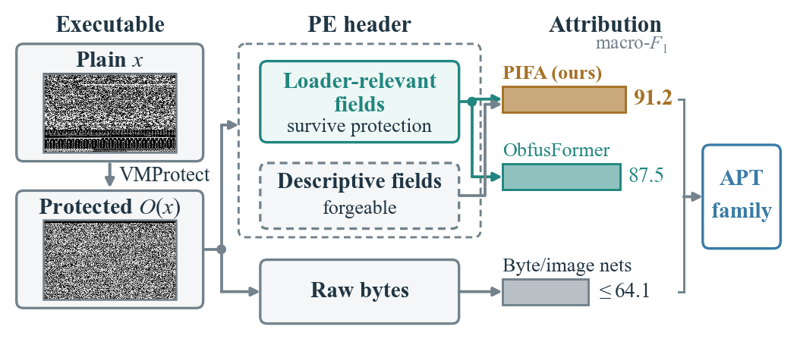

Abstract
Attributing malware to the advanced persistent threat (APT) group that produced it must stay reliable after commercial obfuscation has rewritten the code, and against an adversary who forges a file's metadata to evade or misdirect attribution. However, static attributors of virtualization-obfuscated malware have been evaluated on splits that leak executables or builds between training and testing, and they read header or byte features that an adversary can rewrite, so no method attributes protected malware robustly.
We propose PIFA (Perturbation-Invariant, Forgery-resistant Attribution), a gradient-boosted attributor that reads every PE-header field but is trained on forged, copied, and edited copies of each executable, so it uses a field only where it agrees with the non-forgeable loader-relevant structure. We further develop ObfusFormer, a multi-view Transformer trained on each executable paired with its protected version, and study both on a leakage-free, build-grouped, adversary-aware benchmark of nine APT groups rebuilt from our earlier work. On unseen builds, PIFA attributed VMProtect-protected executables with a macro-F1 of 91.2%, and stayed at 91.1%, 90.9%, and 91.0% under forgery, false-flag, and editing attacks — the most accurate attribution that survives every attack.
Approach

The robustness result
The descriptive header fields (time stamp, section names, Rich header, …) carry a real family signal, but an adversary can forge them or copy them from another group. Reading only the loader-relevant fields resists that but discards the signal and still breaks under field edits. PIFA reads everything and learns, through adversarial training, to trust a field only when it is consistent with the structure an adversary cannot change — the only method robust to all three attacks.
| Attributor (macro-F1, %) | Clean | Forged | False‑flag | Edited |
|---|---|---|---|---|
| PIFA (ours) | 91.2 | 91.1 | 90.9 | 91.0 |
| Trees, all header fields | 92.5 | 48.3 | 50.2 | 91.8 |
| Trees, loader-relevant fields | 90.9 | 90.9 | 90.9 | 85.3 |
| ObfusFormer (ours, deep) | 87.5 | 87.5 | 87.5 | 68.3 |
Header manipulations of VMProtect-protected test executables, Joint protocol, build-grouped folds (seed 0). A false flag copies another group's descriptive fields; PIFA sends only 1.6% of such samples to the donor group, versus 29.7% for the all-header trees.
Highlights
- A method, not just a finding. Adversarial header training reconciles the accuracy of the full PE header with robustness to forgery, false-flag, and editing attacks — at no inference cost.
- Simple and fast. Gradient-boosted trees over parsed header fields; seconds per fold on a laptop CPU, above a multi-view Transformer and eight image/byte networks.
- An honest benchmark. A leakage-free, build-grouped, forgery-aware evaluation of nine APT groups, rebuilt from the VM-obfuscated corpus of our earlier work; attribution of later builds is tested too.
Citation
@article{fang2026pifa,
title = {PIFA: Adversarially Trained, Forgery-Resistant Attribution
of Virtualization-Obfuscated APT Malware},
author = {Fang, Xubo and Dong, Haochen and Zhong, Lei
and Wang, Jiaqing and Han, Sicheng},
journal = {IEEE Transactions on Dependable and Secure Computing (under review)},
year = {2026}
}